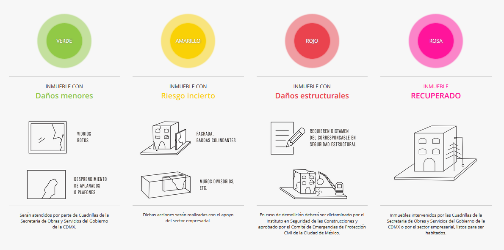

Sección destinada a analizar como afectó el sismo del 19 de septiembre con epicentro en Morelos
Derrumbres y muertes

De acuerdo al mapa se puede apreciar que las delegaciones con mayor cantidad de derrumbres fueron Cuauhtémoc con 12 derrumbres, Benito Juárez con 11 derrumbres y Coyoacán con 5 derrumbres. Analogamentehubo 63 fallecidos en la Delegación Cuauhtémoc, 51 fallecidos en Milpa Alta, 36 en Tlapan y 22 en Coyoacán.
Inmuebles revisados.

Un grupo de voluntarios crearon la Web App salvatucasa.mx, quienes buscaban enlazar arquitectos e ingenieros para poder realizar levantamientos sobre los estados de las construcciones reportadas por afectaciones originadas por el sismo del 19 de septiembre, y con dicha información el Instituto para la Seguridad de las Construcciones en la Ciudad de México realizó una base de datos de la cual recabamos dichos datos y realizamos un análisis sobre las evaluaciones de los inmuebles. De dicha evaluación sobresale que la Delegación Cuauhtémoc se evaluaron 3,251 inmuebles, 2,590 inmuebles en la delegación Iztapalapa, 2,064 en Benito Juárez y 1,230 en Coyoacán
Del total de inmuebles evaluados se realizó una clasificación de 4 colores , en la cual el verde indica que se revisó la edificación pero sólo tenía afectaciones leves, amarillo en la que el inmueble tiene riesgo incierto, rojo indica daños estructurales y rosa es por unmueble recuperado.
